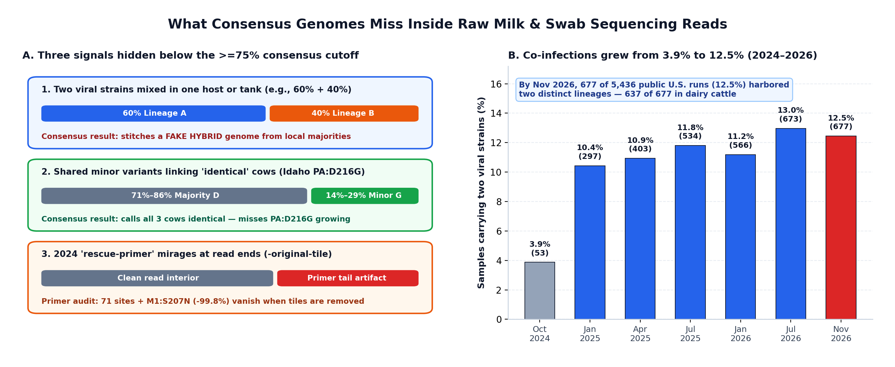
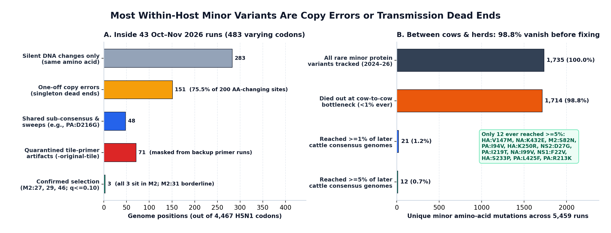
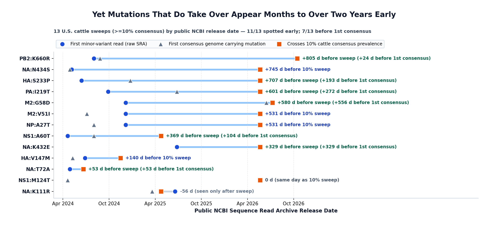
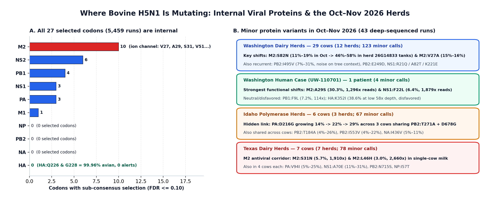

What Consensus Genomes Miss in Dairy Cattle H5N1: Dead Ends, Early Warnings, and Where the Fall 2026 Virus Is Mutating
Whenever diagnostic labs sequence H5N1 bird flu from cow milk, bulk dairy tanks, or infected farm workers, standard surveillance pipelines boil millions of raw sequencing reads down to a single consensus genome—keeping whichever genetic letter exceeds roughly 75% at each position and throwing the rest away. What happens if we stop throwing those sub-consensus minor variants (iSNVs) away? Reading the full mix of viruses inside 5,459 public U.S. H5N1 runs (2024–2026) and 43 deep-sequenced October–November 2026 samples reveals what consensus trees never see: 1 in 8 recent samples holds two viral strains at once, nearly 99% of minor variants are evolutionary dead ends wiped out between cows, the rare changes that do sweep show up months to over two years ahead of consensus takeover, and nearly all adaptive pressure is concentrated inside internal viral proteins rather than surface spikes.
By November 2026, 12.5% (677 / 5,436) of U.S. H5N1 runs carried two distinct strains at once—637 of them in dairy cattle, up from 3.9% in late 2024. Below the surface, cows with identical consensus genomes can also share growing minority mutations (like PA:D216G rising from 14% to 29% across Idaho herds).
Most minor variation inside an infected cow is harmless or transient copy noise (75.5% of protein-changing sites in Fall 2026 are one-offs), plus backup primer artifacts. Across 1,735 rare protein variants tracked forward, tight bottlenecks wiped out 98.8% before reaching even 1% prevalence.
Among the mutations that eventually swept U.S. dairy cattle, 11 of 13 observable sweeps first showed up in raw minor reads 53 to 805 days before reaching 10% consensus dominance—and 7 of 13 appeared up to 557 days before the very first consensus genome ever carried them.
All 27 genome positions showing sustained sub-consensus selection across 5,459 runs sit in internal viral proteins—led by the M2 ion channel (10 sites) and polymerase/NS genes—while human-receptor switches HA:Q226 and G228 remain ≥ 99.96% avian with zero alerts.
1. What raw milk reads reveal that consensus genomes erase
To study viral evolution inside infected hosts without losing phylogenetic context, we used our framework μ-HyphAeon—an extension of our HyphAeon evolutionary model that reads the full mixture of sequencing reads at every codon directly on the viral family tree rather than forcing each specimen down to a single consensus letter. Looking directly at raw reads across 5,459 public U.S. H5N1 runs and 43 deeply sequenced October–November 2026 samples (42 USDA dairy cattle milk submissions plus hospitalized Washington human patient UW-110701) surfaces three biological and practical realities immediately (Figure 1A):
- Two viral strains sharing one cow or milk tank: When a sample carries two distinct lineages at roughly 60% and 40%, a majority consensus caller stitches parts of Strain A and parts of Strain B into a chimeric genome that never actually existed in nature. Across public U.S. H5N1 sequences, genuine multi-strain co-infections climbed steadily from 3.9% (53 of 1,369 runs) in October 2024 to 12.5% (677 of 5,436 runs) by November 2026—with 637 of those 677 co-infections occurring in dairy cattle as outbreaks overlapped across farms and states (Figure 1B). Notably, in our clean Fall 2026 set of 43 alignments, all 11 individual cow milk samples had only trace (≤ 3.3%) background variation, showing that individual acute milk infections usually carry one dominant virus even when regional bulk tanks mix multiple herds.
- Hidden epidemiological links between "identical" cows: Consensus genomes from three Fall 2026 Idaho cows (
26G14109-001,26G14109-002, and November 6 cow26G14741-001) look identical. Yet inside their raw reads, all three share a rising minority polymerase mutation,PA:D216G, stepping cleanly from 14% → 22% → 29% on top of an already mammalian-adaptedPB2:T271A + D678Gbackbone—capturing active within-herd and between-herd evolution in motion before consensus changes lock in. - Laboratory artifacts and broken defective viruses hiding alongside real variants: Deep milk sequencing also picks up broken viral fragments—defective viral genomes (DVGs) carrying premature stop codons such as neuraminidase
NA:136*(4.3% in bulk milkSRR41439169) and polymerasePB1:428*(3.4% inSRR41562245). Even more misleading, backup "rescue-primer" kits (labeled-original-tile) designed from 2024 sequences stamp recurrent primer mismatches into weak-RNA Fall 2026 runs, creating 71 artifactual minor-variant positions—plus sneaky mixed cases like matrixM1:S207N, whose signal collapses by 99.8% once rescue-primer runs are held out. Checking read chemistry prevents mistaking lab primers for convergent cow evolution.

PA:D216G), and technical mirages from 2024 rescue primers (-original-tile) that vanish when audited.
(B) Tracking strictly by public release date across 5,436 U.S. H5N1 runs shows multi-strain co-infections rising from 3.9% in late 2024 to 12.5% (677 runs) by November 2026, overwhelmingly in dairy cattle (637 of 677).
2. Why nearly 99% of minor variants are dead ends
It is tempting to look at a table of 200+ minority amino-acid mutations inside dairy cattle and worry that the virus is furiously exploring hundreds of adaptive escapes at once. The actual numbers tell a far more reassuring—and population-genetically grounded—story (Figure 2).
Inside the 43 Fall 2026 dairy cow and human spillover samples (covering 4,467 protein-coding positions), only 483 codons showed any minor variation at all once reads were filtered. Over half of those (283 sites) were strictly silent DNA changes that leave the viral protein completely unchanged. Of the remaining 200 positions that actually altered an amino acid, 151 (75.5%) were one-off random copying errors appearing in a single animal and going nowhere when evaluated against millions of background influenza sequences on the tree (Figure 2A).

-original-tile primers, and only 3 codons pass strict multi-sample statistical selection (all in M2, with M2:S31N right at the boundary).
(B) Following all 1,735 unique rare amino-acid minor mutations forward across 5,459 U.S. runs from 2024 to 2026 shows that tight cow-to-cow transmission bottlenecks eliminate 98.8% (1,714 variants) before they ever appear in 1% of later cattle consensus genomes. Only 12 ever crossed 5%.
Even more striking is what happens between animals. In our earlier November 6 outbreak analysis, we found that each Washington herd jump passed through a tight founding bottleneck of just 1 to 3 cows. When a cow sheds millions of virions, only a tiny lucky sample starts the next infection—meaning almost every minor variant inside one animal is simply left behind at transmission. Tracking all 1,735 distinct rare amino-acid minor variants forward across public U.S. sequencing runs from 2024 through November 2026 proved that empirically (Figure 2B): 1,714 of 1,735 (98.8%) never reached even 1% of consensus genomes. Only 21 variants (1.2%) ever crossed 1%, and just 12 (0.7%) ever crossed 5%. Finding a rare minor mutation inside one cow does not mean it is about to take over the country.
3. Yet the mutations that do take over show up months to two years early
If 98.8% of minor variants die out, why bother looking below the consensus threshold? Because when a mutation does win and sweep across cattle herds, it does not teleport into consensus sequences overnight—it replicates inside individual cows first.
To test this honestly without peeking into the future, we ordered every single U.S. run in PRJNA1102327 strictly by the date its raw sequencing reads were publicly posted to NCBI (not retrospective sample collection dates), and examined all 15 mutations that eventually swept to ≥ 10% prevalence across dairy cattle consensus genomes. Two sweeping mutations (NS1:E70A and early-fixed PB2:T271A) left no prior sub-consensus trace before appearing in consensus. Across the remaining 13 sweeps, raw minor-variant reads gave striking advance notice (Figure 3 and Table 1):

- 11 of 13 sweeps (85%) spotted 2 to 26 months before dominance: Minor reads carrying polymerase mutation
PB2:K660Rappeared 805 days early (August 2024 raw reads vs. late-2026 sweep), neuraminidaseNA:N434Sappeared 746 days early, hemagglutininHA:S233Pappeared 707 days early, and polymerasePA:I219Tappeared 602 days early. - 7 of 13 appeared before any consensus genome in the country had them: For example, ion-channel change
M2:G58Dshowed up at 3.6% inside raw cattle reads in December 2024—557 days (~18 months) before the first consensus genome ever fixed it in mid-2026. Similarly,NA:K432E(the hallmark neuraminidase mutation later carried into Washington herds) appeared at 9.0% in raw reads in June 2025, 329 days (~11 months) ahead of its first consensus genome, andPA:I219Tappeared 272 days (~9 months) before its first consensus genome.
| Sweeping Mutation | 1st Raw Minor Read (Freq) | 1st Consensus Genome | Reached 10% Cattle Sweep | Early Warning Gained |
|---|---|---|---|---|
PB2:K660R |
Aug 2024 (18.9%) | Aug 2024 | Oct 2026 | +805 days (+24 d before 1st consensus) |
HA:S233P |
Jun 2024 (4.1%) | Dec 2024 | May 2026 | +707 days (+193 d before 1st consensus) |
PA:I219T |
Sep 2024 (3.4%) | Jun 2025 | May 2026 | +602 days (+272 d before 1st consensus) |
M2:G58D |
Dec 2024 (3.6%) | Jun 2026 | Jul 2026 | +581 days (+557 d before 1st consensus) |
NA:K432E |
Jun 2025 (9.0%) | May 2026 | May 2026 | +329 days (+329 d before 1st consensus) |
HA:V147M |
Jun 2024 (12.1%) | May 2024 | Nov 2024 | +140 days ahead of 10% sweep |
4. Where the variation actually sits—across proteins and in Oct–Nov 2026
So when minor variants do clear our filters and rise above background copy errors, which part of the influenza virus are they changing? The answer from both the 2024–2026 archive and the fresh Oct–Nov 2026 outbreaks is remarkably consistent (Figure 4):
Across all 5,459 public U.S. H5N1 runs, every single one of the 27 codons showing statistically calibrated within-host selection sits inside internal viral proteins—and zero sit in surface proteins HA or NA (Figure 4A). The hotspot is overwhelmingly the tiny 97-amino-acid M2 proton-channel / antiviral-resistance protein (10 selected codons), followed by nonstructural and polymerase subunits (NS2: 6, PB1: 4, PA: 3, NS1: 3, M1: 1). Meanwhile, the canonical mammalian receptor-binding sites on hemagglutinin—HA:Q226 and HA:G228—remained ≥ 99.96% avian across the entire two-year surveillance archive with zero false alarms, and comparing our scores against laboratory deep mutational scanning of H5 hemagglutinin confirms that cattle H5N1 evolution is still completely orthogonal to cattle-antibody escape (r = +0.039) or human α2–6 receptor switching (r = +0.008). Put simply: dairy cattle H5N1 is currently tuning internal replication, pH stability, and host-innate immunity machinery—not dodging cattle antibodies or flipping to human-airway binding.

M2 (10 codons), whereas human-receptor sites HA:Q226 and G228 remain ≥ 99.96% bird-type with 0 alerts.
(B) Breakdown of where minor protein-changing variants sit right now in the 43 Fall 2026 runs across Washington, Idaho, Texas, and human spillover patient UW-110701.
Zooming in on the 43 October–November 2026 alignments (Figure 4B and interactive explorer below) shows exactly where those internal variants sit across each active regional outbreak:
Looking beneath consensus genomes gives us three things consensus sequences cannot: it catches the 1 in 8 mixed infections before they corrupt phylogenetic trees, reveals shared sub-consensus mutations moving between "identical" herds, and spots eventual sweeps like PA:I219T, NA:K432E, and M2:G58D months to nearly two years early. At the same time, minor-variant lists must always be read with restraint: roughly 99% of rare variants die out at tight cow-to-cow bottlenecks, and right now the Fall 2026 virus is actively remodeling its internal M2 ion-channel and polymerase proteins across Washington, Idaho, and Texas rather than switching hemagglutinin receptor specificity.
Explore Further: Browse every Fall 2026 cow and human sequence on segment-by-segment trees in the AEON-MUTATE H5N1 Studio, read our November 6 consensus herd report (plus its Interactive 9-Tree Explorer), or inspect the open-source HyphAeon code and raw NCBI PRJNA1102327 sequencing archive.